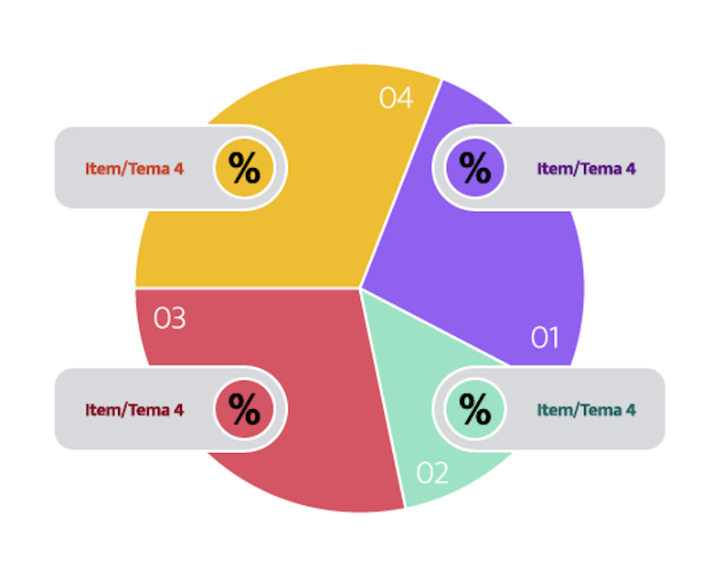
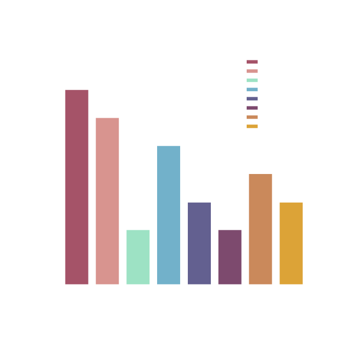
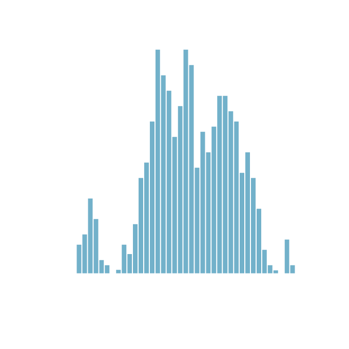
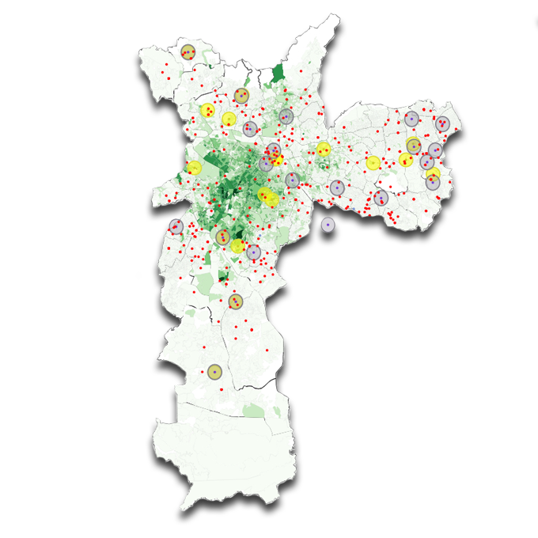

Diagrama Circular

O diagrama circular é uma forma de representação de diferentes
categorias onde cada uma delas é apresentada em um tamanho que representa sua
proporção frente ao todo.
Quando representado como um circulo completo, também recebe o nome de gráfico em
pizza, muito comum para representar porcentagens ou frações.
Gráfico de Barra

O gráfico de barras é útil para comparar diferentes grupos, a
partir da mensuração de variáveis. Desta forma, obrigatoriamente, em um eixo
deve ser apresentado os grupos que estão sendo comparados e, os valores
mensurados da varável em questão, no outro.
Histograma

O histograma é uma variação do gráfico de barra e é utilizado
para mostrar distribuição de frequência de determinado fenômeno.
Geralmente, no eixo y é mostrado a contagem de acontecimentos do fenômeno e no
eixo x, os intervalos de classe do fenômeno estudado.
Representação por Densidade de Ocorrência

A representação por densidade geralmente é feita por meio de
cores ou gradação de cor para representar a quantidade de vezes que um fenômeno
foi identificado. Quanto mais forte a cor mostrada, mais vezes o fenômeno foi
observado; quanto mais fraca a cor, menos o fenômeno foi observado.
 Metodologia da
Metodologia da